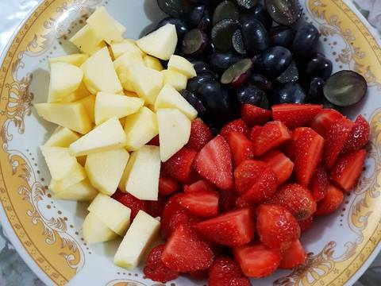

Resep Salad Buah

Bahan-bahan:
- 1 pack anggur seedless
- 1 pack stroberi
- 2 buah apel
- 1 buah lemon (peras airnya)
Bahan Saus:
- 250 gr yoghurt
- 4 sdm kental manis/madu (saya: 4 sachet sweetener)
Langkah-langkah:

Cuci dan potong semua buah sesuai selera

Tuang air lemon ke dalam potongan buah, aduk rata.

Campur yoghurt dan pemanis. Jika kurang manis, silakan tambah sesuai selera.

Tuang saus ke potongan buah. Aduk rata. Sajikan.